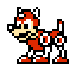

Un robot creado por el Dr. Light para que sea su ayudante de laboratorio. Ha frustrado los malvados planes del Dr. Wily en numerosas ocasiones. Una vez más, ha pedido ser modificado para la batalla.
Dr. Light
Un científico brillante cuyas incontables creaciones robóticas lo han convertido en un auténtico experto en robots. La gente cree que es el responsable de todos los problemas que han causado los robots últimamente.
Dr. Wily
Un científico extremadamente inteligente, responsable de innumerables maldades en el pasado, que al final se ha enmendado. Enseña al mundo una grabación que demuestra que el Dr. Light es el malo y solicita donativos para derrotarle.
Roll
Una ayudante robot creada por el Dr. Light. Es como la hermana pequeña de Mega Man. Es buena cocinando y haciendo las tareas del hogar.
Auto
Un ayudante robot creado por el Dr. Light. Siempre está buscando formas de ayudar a Mega Man en su lucha.
Rush

Es el perro robot de Mega Man, su fiel amigo y compañero.
Proto Man
Un prototipo de robot diseñado por el Dr. Light. Ha ayudado a Mega Man en numerosas ocasiones.